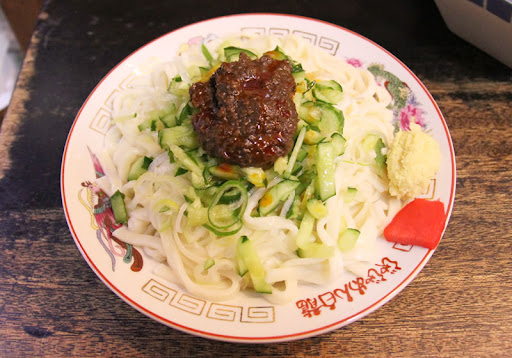

じゃじゃ麺

小麦から作られた、ゆでた温かい平麺の上に
茹でたてのそばをおいしく、たくさん食べていただこうという
キュウリやネギ、特製肉みそを全体によく絡
めて食べる作法が最大の特徴です。
| 所在地 | 盛岡市内丸5-15 |
|---|---|
| 電話番号 | 019-624-2247 |
| 営業時間 | 9:00～21:00（日曜11:30～19:00 |
| 定休日 | 盆時期休、年始休 |
[アクセス経路]
ルート1:盛岡駅 → 【バス10分】 内丸バス停 → 【徒歩5分】 白龍
ルート2:盛岡IC → 【車20分】 白龍